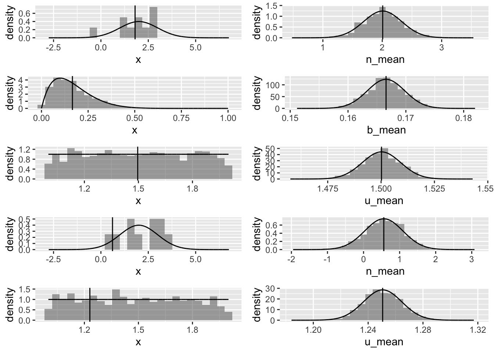
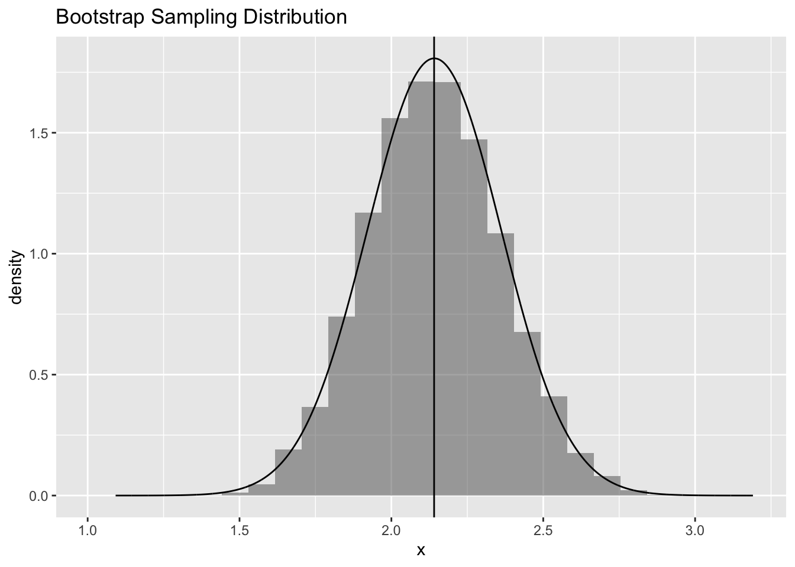
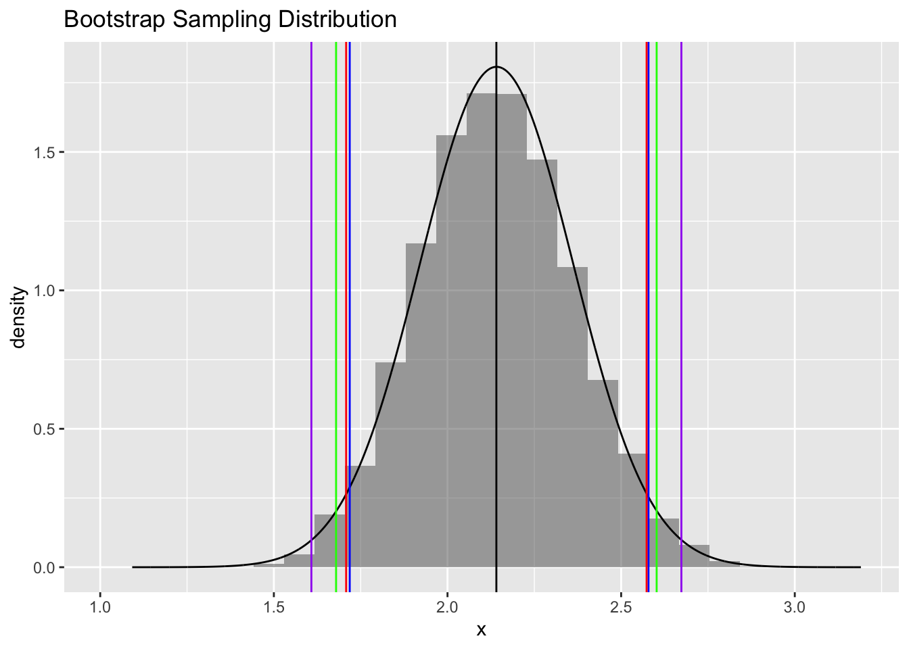

library(tidyverse)
library(infer) # for rep_sample_n()
library(ggformula) # for gf_ functions
library(cowplot) # for plot_grid()
library(mosaic) # for do() * <function>
library(kableExtra) # for kable_styling()Exercise 07
Explore Distributions and the CLT
Learning Objectives
- Plotting various mathematical distributions
- Sampling from distributions that are distinctly non-normal and generating summary statistics
- Visualizing sampling distributions to see the Central Limit Theorem in action
Classic probability and statistical theory - and many parametric statistical tests - assume that the distributions of variables of interest (either things we measure/record about our subjects of study or sample statistics we derived from those measurements) follow certain well-characterized mathematical distributions. For example, when we imagine rolling an unbiased die, we typically assume that we have an equal (i.e., uniform) chance of seeing any given number come up, and when we imagine sampling any particular metric trait from a population, we typically assume that the distribution of that trait in a nature population follows a normal, or Gaussian, distribution (e.g., height). Likewise, we expect or assume that other well-characterized mathematical distributions are appropriate models for the outcomes of other sampling processes. The shape of any of these distributions is governed entirely by a function and one or more tuning parameters for that function.
Plotting Distributions
Below is some code we can use to plot some example distributions and visualize how the shape of those distributions changes with different parameter values…
# some continuous distributions - normal, beta, uniform, F, and Chi Square...
norm1 <- gf_dist("norm", mean = 2, sd = 1)
norm2 <- gf_dist("norm", mean = 30, sd = 15)
norm3 <- gf_dist("norm", mean = 100, sd = 15)
beta1 <- gf_dist("beta", shape1 = 1, shape2 = 10, xlim = c(-0.1, 1.1))
beta2 <- gf_dist("beta", shape1 = 2, shape2 = 10, xlim = c(-0.1, 1.1))
beta3 <- gf_dist("beta", shape1 = 3, shape2 = 1, xlim = c(-0.1, 1.1))
unif1 <- gf_dist("unif", min = 1, max = 2)
unif2 <- gf_dist("unif", min = 10, max = 25)
unif3 <- gf_dist("unif", min = 130, max = 240)
f1 <- gf_dist("f", df1 = 4, df2 = 15)
f2 <- gf_dist("f", df1 = 4, df2 = 99)
f3 <- gf_dist("f", df1 = 30, df2 = 199)
chisq1 <- gf_dist("chisq", df = 2)
chisq2 <- gf_dist("chisq", df = 3)
chisq3 <- gf_dist("chisq", df = 20)
# some discrete distributions - Poisson,binomial, negative binomial...
pois1 <- gf_dist("pois", lambda = 3)
pois2 <- gf_dist("pois", lambda = 10)
pois3 <- gf_dist("pois", lambda = 35)
binom1 <- gf_dist("binom", size = 10, prob = 0.5, xlim = c(0, 10))
binom2 <- gf_dist("binom", size = 20, prob = 0.5, xlim = c(0, 20))
binom3 <- gf_dist("binom", size = 20, prob = 0.1, xlim = c(0, 20))
nbinom1 <- gf_dist("nbinom", size = 5, prob = 0.5, xlim = c(0, 20))
nbinom2 <- gf_dist("nbinom", size = 10, prob = 0.5, xlim = c(0, 20))
nbinom3 <- gf_dist("nbinom", size = 15, prob = 0.5, xlim = c(0, 20))
# note that in the code above, we could instead use the `plotDist()` function
# from {mosaic} this example uses `gf_dist()` simply to create .gg (ggplot)
# objects rather than .trellis (lattice) objects, which makes visualizing the
# plots together using {cowplot} look better
row1 <- plot_grid(norm1, norm2, norm3, nrow = 1) + draw_plot_label(label = "Normal",
fontface = "bold", size = 12, hjust = 0, vjust = -0.5)
row2 <- plot_grid(beta1, beta2, beta3, nrow = 1) + draw_plot_label(label = "Beta",
fontface = "bold", size = 12, hjust = 0, vjust = -0.5)
row3 <- plot_grid(unif1, unif2, unif3, nrow = 1) + draw_plot_label(label = "Uniform",
fontface = "bold", size = 12, hjust = 0, vjust = -0.5)
row4 <- plot_grid(chisq1, chisq2, chisq3, nrow = 1) + draw_plot_label(label = "Chi Sq",
fontface = "bold", size = 12, hjust = 0, vjust = -0.5)
row5 <- plot_grid(f1, f2, f3, nrow = 1) + draw_plot_label(label = "F", fontface = "bold",
size = 12, hjust = 0, vjust = -0.5)
blank <- ggplot() + theme_nothing() # this is just for spacing at the top of the plot
plot1 <- plot_grid(blank, row1, row2, row3, row4, row5, nrow = 6, rel_heights = c(0.25,
1, 1, 1, 1, 1))
plot1row1 <- plot_grid(pois1, pois2, pois3, nrow = 1) + draw_plot_label(label = "Poisson",
fontface = "bold", size = 12, hjust = 0, vjust = -0.5)
row2 <- plot_grid(binom1, binom2, binom3, nrow = 1) + draw_plot_label(label = "Binomial",
fontface = "bold", size = 12, hjust = 0, vjust = -0.5)
row3 <- plot_grid(nbinom1, nbinom2, nbinom3, nrow = 1) + draw_plot_label(label = "Negative Binomial",
fontface = "bold", size = 12, hjust = 0, vjust = -0.5)
blank <- ggplot() + theme_nothing() # this is just for spacing at the top of the plot
plot2 <- plot_grid(blank, row1, row2, row3, nrow = 4, rel_heights = c(0.25, 1, 1,
1))
plot2Sampling Distributions and the CLT
Below are some examples of [1] drawing random sets of observations from several of these distributions, [2] calculating summary statistics (e.g., means) for each sample, and [3] repeating this process multiple times to generate sampling distributions for these summary statistics. Each of the first three snippets of code below first draws and plots a single sample of size n from a particular distribution, plots a histogram of that sample, and superimposes the distribution is is drawn from (black curve) and the mean of the sample (red line). The last two snippets do the same, but instead plots selected quantile values as example of alternative summary statistics. These are the left-hand plots in the resulting 10-panel figure.
Each snippet also then draws reps separate samples from the same distributions, calculates the same summary statistics, and plots the resultant sampling distributions of those statistics with a superimposed normal distribution, demonstrating the Central Limit Theorem (CLT). These are the right-hand plots in the resulting 10-panel figure.
As a refresher, recall that CLT states that the sampling distribution of a sample mean (and many other sample statistics) is approximately normal if the sample size is large enough, even if the population distribution that the sample is drawn from is not normal.
Additionally, the CLT also states that the sampling distribution should have the following properties:
- The mean of the sampling distribution will be equal to the mean of the population distribution.
\[\bar{x} = \mu\]
- The standard deviation of the sampling distribution will be equal to the standard deviation of the population distribution divided by the square root of the sample size. This is the standard error.
\[s = \frac{\sigma}{\sqrt{n}}\]
# sample size
n <- 10
# number of replicates
reps <- 1000
# normal distribution generate 1 sample of size n...
x <- rnorm(n, mean = 2, sd = 1)
# and plot it along with the distribution it was drawn from and the mean of the
# sample
a <- gf_dhistogram(~x) |>
gf_dist("norm", mean = 2, sd = 1) |>
gf_vline(xintercept = ~c(mean(x)))
# generate a sampling distribution for the sample mean based on *reps* samples
# of size *n* and put it in a vector...
n_mean <- tibble(do(reps) * mean(rnorm(n, mean = 2, sd = 1))) |>
pull(mean)
# and plot it along with the sampling distribution and the mean of the sample
b <- gf_dhistogram(~n_mean, bins = 30) |>
gf_dist("norm", mean = mean(n_mean), sd = sd(n_mean)) |>
gf_vline(xintercept = ~c(mean(n_mean)))
row1 <- plot_grid(a, b)
# beta distribution generate 1 sample of size n...
x <- rbeta(reps, shape1 = 2, shape2 = 10)
# and plot it along with the distribution it was drawn from and the mean of the
# sample
a <- gf_dhistogram(~x) |>
gf_dist("beta", shape1 = 2, shape2 = 10) |>
gf_vline(xintercept = ~c(mean(x)))
# generate a sampling distribution for the sample mean based on *reps* samples
# of size *n* and put it in a vector...
b_mean <- tibble(do(reps) * mean(rbeta(reps, shape1 = 2, shape2 = 10))) |>
pull(mean)
# and plot it along with the sampling distribution and the mean of the sample
b <- gf_dhistogram(~b_mean) |>
gf_dist("norm", mean = mean(b_mean), sd = sd(b_mean)) |>
gf_vline(xintercept = ~c(mean(b_mean)))
row2 <- plot_grid(a, b)
# uniform distribution generate 1 sample of size n...
x <- runif(reps, min = 1, max = 2)
# and plot it along with the distribution it was drawn from and the mean of the
# sample
a <- gf_dhistogram(~x) |>
gf_dist("unif", min = 1, max = 2) |>
gf_vline(xintercept = ~c(mean(x)))
# generate a sampling distribution for the sample mean based on *reps* samples
# of size *n* and put it in a vector...
u_mean <- tibble(do(reps) * mean(runif(reps, min = 1, max = 2))) |>
pull(mean)
# and plot it along with the sampling distribution and the mean of the sample
b <- gf_dhistogram(~u_mean) |>
gf_dist("norm", mean = mean(u_mean), sd = sd(u_mean)) |>
gf_vline(xintercept = ~c(mean(u_mean)))
row3 <- plot_grid(a, b)
# normal distribution... with a different statistic generate 1 sample of size
# n...
x <- rnorm(n, mean = 2, sd = 1)
# and plot it along with the distribution it was drawn from and the mean of the
# sample
a <- gf_dhistogram(~x) |>
gf_dist("norm", mean = 2, sd = 1) |>
gf_vline(xintercept = ~c(quantile(x, 0.025)))
# generate a sampling distribution for the sample mean based on *reps* samples
# of size *n* and put it in a vector...
n_mean <- tibble(do(reps) * quantile(rnorm(n, mean = 2, sd = 1), 0.025)) |>
pull(X2.5.)
# and plot it along with the sampling distribution and the mean of the sample
b <- gf_dhistogram(~n_mean, bins = 30) |>
gf_dist("norm", mean = mean(n_mean), sd = sd(n_mean)) |>
gf_vline(xintercept = ~c(mean(n_mean)))
row4 <- plot_grid(a, b)
# uniform distribution... with a different statistic generate 1 sample of size
# n...
x <- runif(reps, min = 1, max = 2)
# and plot it along with the distribution it was drawn from and the 0.25
# quantile of the sample
a <- gf_dhistogram(~x) |>
gf_dist("unif", min = 1, max = 2) |>
gf_vline(xintercept = ~c(quantile(x, 0.25)))
# generate a sampling distribution for the 0.25 quantile based on *reps*
# samples of size *n* and put it in a vector...
u_mean <- tibble(do(reps) * quantile(runif(reps, min = 1, max = 2), 0.25)) |>
pull(X25.)
# and plot it along with the sampling distribution and the mean of the sample
b <- gf_dhistogram(~u_mean) |>
gf_dist("norm", mean = mean(u_mean), sd = sd(u_mean)) |>
gf_vline(xintercept = ~c(mean(u_mean)))
row5 <- plot_grid(a, b)
plot3 <- plot_grid(row1, row2, row3, row4, row5, nrow = 5)
plot3
Generating CIs around a Statistic
The following code draws a single sample of size n from a normal distribution (as above) and calculates the mean and standard deviation of that sample and estimates the standard error of the mean. It then generates several different estimates for a 95% confidence interval around that sample mean:
- Based on bootstrap resampling 10,000 times from the original sample and using quantiles from the resulting bootstrap sampling distribution to define the lower and upper bounds of the CI
- Using the standard deviation of the bootstrap sampling distribution, along with the original sample mean, to generate a theory-based bootstrap CI, presuming that the shape of bootstrap sampling distribution is normal
- Using the estimate of the standard error generated from the original sample, along with the original sample mean, to generate a different theory-based CI, assuming that the shape of sampling distribution is normal
- Using the estimate of the standard error generated from the original sample, along with the original sample mean, to generate an alternative theory-based CI, but presuming that the shape of sampling distribution is better modeled as a t-distribution
# sample size
n <- 10
# number of replicates
reps <- 10000
# normal distribution generate 1 sample of size n...
x <- rnorm(n, mean = 2, sd = 1)
mean(x)## [1] 2.323082# close to, but not the same, as the population mean
se <- sd(x)/sqrt(length(x))
# estimate of se based on 1 random sample equivalent to...
se <- sciplot::se(x)
se_pop <- 1/sqrt(length(x)) # theoretical se calculated from known population sd
boot <- vector() # set up a dummy variable to hold our bootstrap simulations
# bootstrap sample size should be the same length as our sample data
for (i in 1:reps) {
boot[[i]] <- mean(sample(x, length(x), replace = TRUE))
}
# or...
boot <- tibble(x) |>
rep_sample_n(size = length(x), replace = TRUE, reps = reps) |>
group_by(replicate) |>
summarize(mean = mean(x)) |>
pull(mean)
# or...
boot <- do(reps) * mean(sample(x, length(x), replace = TRUE))
boot <- boot$mean
# plot a histogram of our bootstrapped sample means with normal curve and
# original sample mean superimposed
plot4 <- gf_dhistogram(~boot, title = "Bootstrap Sampling Distribution", xlab = "x") |>
gf_dist("norm", mean = mean(boot), sd = sd(boot)) |>
gf_vline(xintercept = ~c(mean(x))) # mean of our original vector of samples
plot4
# ci bounds inferred from quantiles of bootstrap distribution
ci.boot.quantiles <- quantile(boot, c(0.025, 0.975))
# ci bounds inferred from original sample mean and sd of bootstrap sampling
# distribution
ci.boot.theory <- qnorm(c(0.025, 0.975), mean = mean(x), sd = sd(boot)) # 0.025 and 0.975 quantiles of normal with mean and sd of boot
# equivalent to... mean + quantiles of standard normal times sd of bootstrap
# sampling distribution (= standard error)
ci.boot.theory <- mean(x) + qnorm(c(0.025, 0.975), 0, 1) * sd(boot) # 1.96 SE above and below the mean
# ci bounds inferred from original sample mean + quantiles of standard normal
# times standard error
ci.norm.theory <- mean(x) + qnorm(c(0.025, 0.975), 0, 1) * se
# equivalent to...
ci.norm.theory <- mean(x) + c(-1, 1) * qnorm(0.975) * se
# ci bounds inferred from original sample mean + quantiles of t distribution
# times standard error
ci.t.theory <- mean(x) + qt(c(0.025, 0.975), df = length(x) - 1) * se
# equivalent to...
ci.t.theory <- mean(x) + c(-1, 1) * qt(0.975, df = length(x) - 1) * se
comparison <- rbind(ci.boot.quantiles, ci.boot.theory, ci.norm.theory, ci.t.theory)
kable(comparison, digits = 3) |>
kable_styling(font_size = 14, full_width = FALSE)| 2.5% | 97.5% | |
|---|---|---|
| ci.boot.quantiles | 1.748 | 2.898 |
| ci.boot.theory | 1.742 | 2.904 |
| ci.norm.theory | 1.707 | 2.939 |
| ci.t.theory | 1.612 | 3.034 |
plot4 <- plot4 |>
gf_vline(xintercept = ~ci.boot.quantiles, color = "blue") |>
gf_vline(xintercept = ~ci.boot.theory, color = "red") |>
gf_vline(xintercept = ~ci.norm.theory, color = "green") |>
gf_vline(xintercept = ~ci.t.theory, color = "purple")
plot4